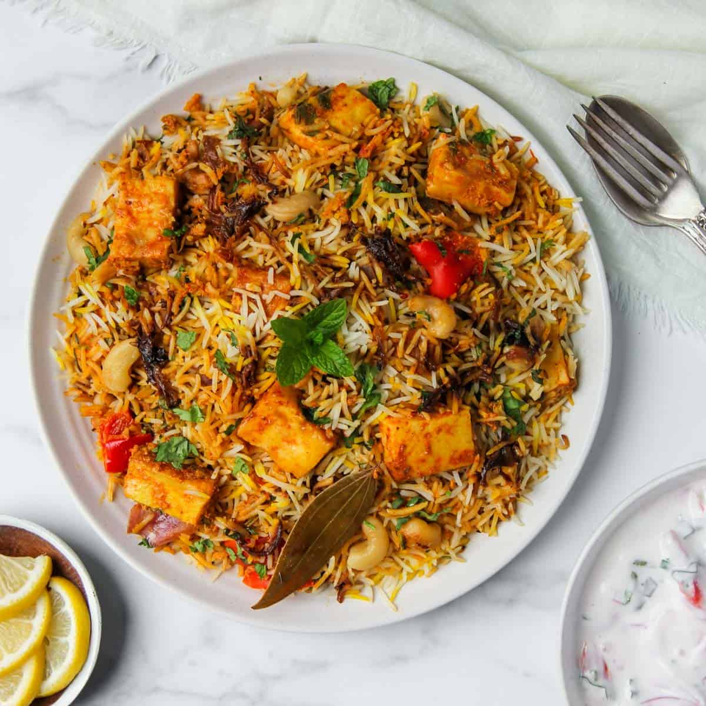
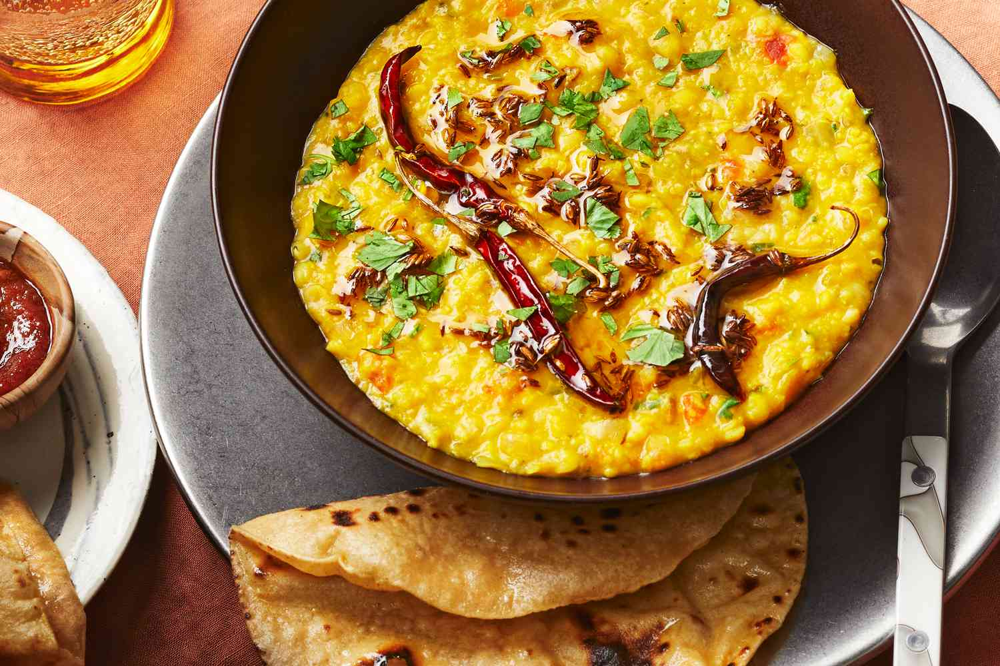

Midday Meals (Lunch)
Serve hot with curd or pickle.

Lemon Rice
Ingredients :
- 1 cup cooked rice
- 1 tbsp oil
- 1 tsp mustard seeds
- 1 tbsp peanuts
- 1-2 dried red chilies
- 8-10 curry leaves
- 1/4 tsp turmeric powder
- Salt to taste
- 1 tbsp coriander leaves, chopped
- 1 tbsp lemon juice
Making Process :
- Heat oil in a pan. Add mustard seeds and let them splutter.
- Add peanuts, dried red chilies, and curry leaves. Sauté until peanuts turn golden.
- Add turmeric powder and salt. Mix well
- Add cooked rice and gently mix to coat the rice evenly.
- Turn off heat and add lemon juice and coriander leaves. Mix well.
- Serve warm.
Veg Wraps
Ingredients :
- 2 small whole wheat tortillas or chapatis
- 1/2 cup mixed vegetables (carrot, bell pepper, cucumber, lettuce), thinly sliced
- 2 tbsp hung curd or yogurt
- 1 tsp chaat masala
- 1 tbsp mint chutney (optional)
- Salt to taste
Making Process :
- In a bowl, mix hung curd with salt and chaat masala.
- Spread the yogurt mixture evenly over the tortillas.
- Arrange the sliced vegetables on top.
- Add a spoonful of mint chutney if desired.
- Roll the tortillas tightly into wraps.
- Cut diagonally and serve immediately.

Paneer Biryani
Ingredients :
- 1/2 cup basmati rice
- 100 g paneer cubes
- 1 small onion, sliced
- 1 small tomato, chopped
- 1 tbsp oil
- 1/2 tsp ginger-garlic paste
- 1/4 tsp turmeric powder
- 1/2 tsp garam masala
- Salt to taste
- 1 cup water
- Fresh coriander leaves for garnish
- Rinse rice and soak for 15 minutes. Drain.
- Heat oil in a pan, sauté onions until golden. Add ginger-garlic paste and tomatoes; cook until soft.
- Add turmeric, garam masala, salt, and paneer cubes. Cook for 3-4 minutes.
- Add soaked rice and water. Bring to a boil.
- Lower flame, cover, and cook until rice is tender and water absorbed (~15 minutes).
- Garnish with coriander leaves and serve hot.

Mixed Dal & Roti
Ingredients :
- 1/4 cup toor dal (split pigeon peas)
- 1/4 cup moong dal (yellow lentils)
- 1/4 tsp turmeric powder
- 2 small wheat rotis (chapatis)
- Salt to taste
Making Process :
- Wash dals and pressure cook with turmeric and salt till soft.
- Heat ghee/oil in a small pan, temper with mustard seeds, cumin (optional), and pour into cooked dal.
- Mix well and simmer for 5 minutes.
- Serve dal hot with rotis.